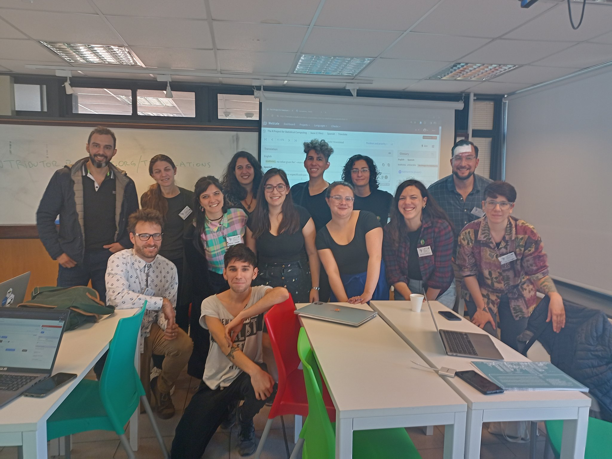

Last month, I (Toby) went to the LatinR conference in Montevideo, Uruguay. I had two goals: to teach about data.table in a tutorial, and to find people to work on translations.
Tutorial about data.table
I presented a tutorial on the first day of the LatinR meeting, to an audience of about 50 students.

data.table tutorialThe google slides that I used are online, and I also created a GitHub repo with the source files that I used for creating the figures in the slides. During the talk, Elio Campitelli and Paola Corrales were there to help people in the audience with individual/technical questions (for example, installation of data.table from github master was difficult for some people using windows). I did not have enough time to do all of the exercises, but I did spend about 10 minutes at the end of my talk, to invite people to participate in the translation projects and travel awards.
One of the students in the audience was Mara Destefanis, who said she was very interested to participate in the translation project. In fact, since the conference, she has sent me several emails, updating me about a Spanish translation of my tutorial slides.
Translation workshop
During the conference, there was a translation workshop.

I learned that there has been a lot of progress recently, about translations in R.
- During the R project sprint in summer 2023, there was an effort to crowdsource translations of messages, using a new weblate server for R.
- Elio Campitelli proposed a R Consortium project about translating Rd pages. Currently, there is only one Rd page for help on any given topic, and it is possible in theory to write an Rd page in multiple languages, but in practice most are in English only.
- Nestor Montano told me that he recorded an online workshop about
data.table, in Spanish! Slides, Youtube. - Riva Quiroga told me about the R Para Ciencia de Datos project, which is a Spanish translation of the popular R for Data Science online textbook (an important reference about tidyverse). Part of that project involved creating new data sets in the datos package, with column names and man pages translated to Spanish. For example vuelos.rd is the man page for the translated version of flights data. Riva told me about her experience leading this translation project. For our NSF
data.tableproject, she suggested several important criteria to consider, that I had not written in my original call for translation projects. After discussing with her, I wrote a PR to revise and improve the call for translation projects.
Overall I felt that going to LatinR was a very worthwhile experience, because of the successful outreach in my tutorial, and the great networking at the translation workshop.
Communcations since then
Since then, I have been in email contact with several people who have expressed interest in the data.table translation project.
- For Spanish, Riva Quiroga (Chile) told me that she would like to lead, with several other people who expressed interest to participate: Nati Labadie (Argentina), Andrea Gomez Vargas (Colombia), Emanuel Ciardullo (Argentina), Nestor Montano (Ecuador), Mara Destefanis (Uruguay), …
- For French, Philippe Grojean told me that he would be interested to lead, and submit an application in the next few months.
- For Portuguese, Leonardo Ferreira Fontenelle told me that he would be interested to lead, and submit an application soon.
I look forward to seeing these projects develop in the coming months!